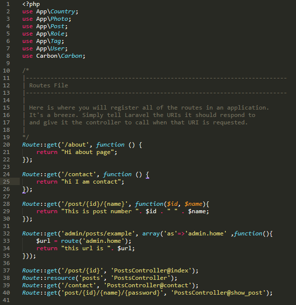
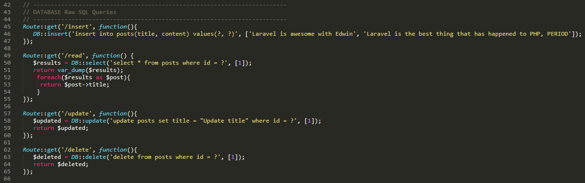
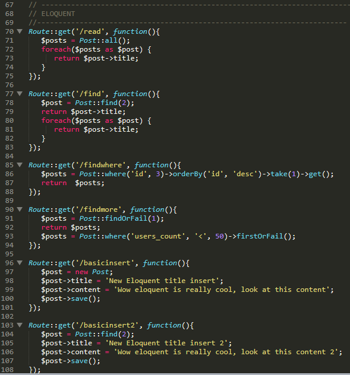
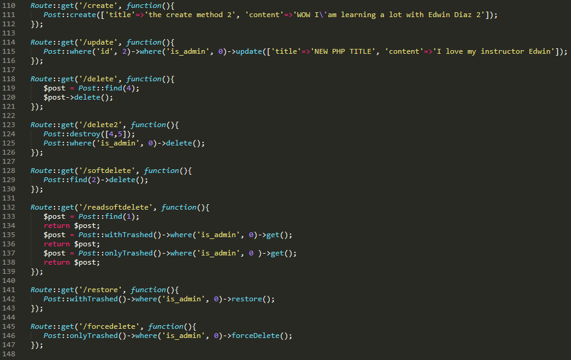
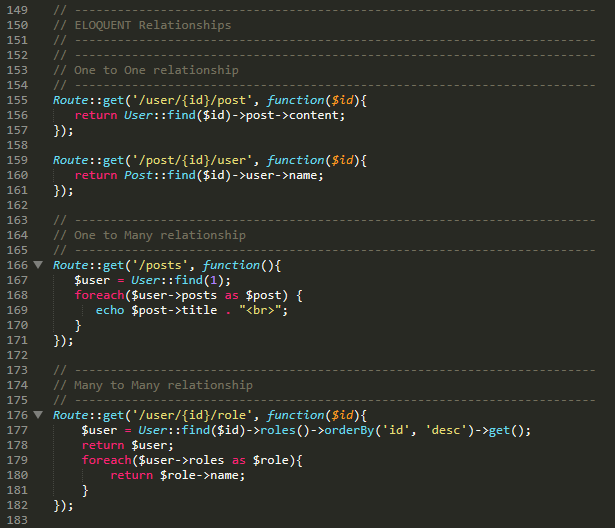
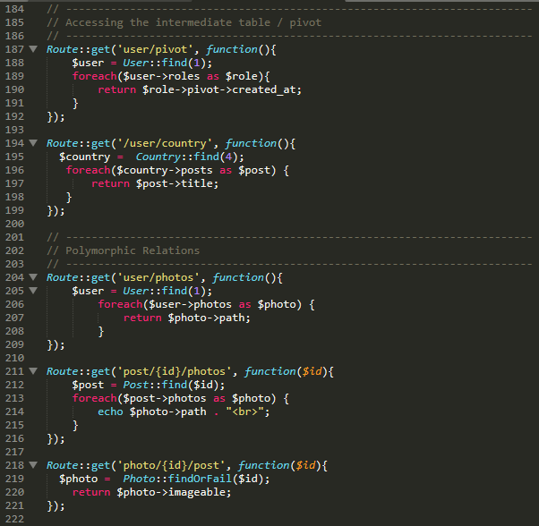
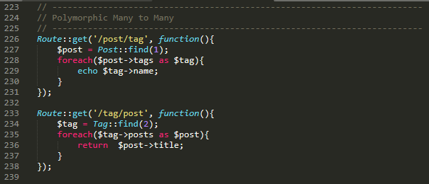
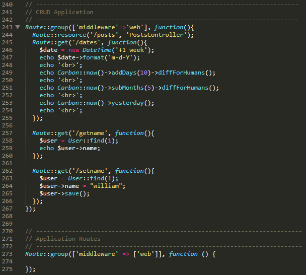

Section 1: The First Step
1. Meet Your Professor
Everybody is welcome
Any color or age
“Anybody can learn programming who matter who you are”
You invest your time and your money for this course take advantage over every single moment there
You have to like what you're doing because if you came into this course thinking that you're just going to get that knowledge and leave without liking programming you're probably going to fail you probably not going to finish this course
This course is going to be a really complete course
You have to like this stuff, if you don't like programming you're not going to finish it
And if you finish it by the time you finish it you won't want to write another piece of code again
So, make sure that you like what you're doing right
And that's for everything for your career goals
Get into something that you like and your time will be you know we'll fly away when you're doing it
So, another thing is you need to put in the time
I know some of you are super busy but if you go from work and you have your kids or your girlfriend whoever is you know doing stuff just tell them “Listen I need some time to study”
Take 30 minutes will take one hour a day or whatever time you have and just focus on that thing only so if you are going to take to lectures they make sure that you take those two lectures but you really take advantage of that time
That's very important
“Just focus on one thing at a time”
Don't go and do many different things at the same time because I know that happens to me all that happened to me many times before and you know and you don't keep and you don't actually learn much from it
So, now I know that no one else will and I'm going to keep reminding you in the course because I know some of us get really tired by the time we finish when we finish the course
“Finish what you start”
You know even if you get all the all that you want it by the by the middle of this course and you say “I'm done”
I can build an application now because that would just teach me it taught me how to do it
That's fine, we'll finish the course, you started it
Make sure you finish and you must build the habit of finishing what you start that way everything you do in life you can finish it and be successful at it
So, make sure that you remember why you’re here all the time even when you are tired and you are frustrated and you can't find an issue to a problem
Make sure that you remember why you are here
Always write it down a piece of paper put it on the wall
I want you to try your best
Try your best to fix it this way you can learn a lot more and I'm really a believer that happened to me and it happened to a lot of my students in other courses
If you keep trying and trying to figure it out yourself you've got to
You're going to become more successful and you're going to learn a lot of new ways of doing it
Well right now I don't want you to get stuck 3 weeks on a piece of code that is very simple that you can't see because you caught you've been coding too much, don't get stuck for
You know I think a rule of thumb is at least you can get stuck on an on an issue 2 or 3 days after that
Ask for help if you are still stuck, take some time and sleep and rest and then come fresh and try to look out if you can figure it out after 2 or 3 days
My goal here is for you to be successful
That is the only way that I'm a successful instructor a successful teacher is by making you a successful student
So, anyway again thank you so much
This is a blessing that you're here
And we're going to continue with the course
Take care!
2. Introduction to Laravel and MVC
What is Laravel?Laravel is a PHP web framework who uses the MVC architecture
What is a Framework?It is the underlying system, the methods, the classes or the files that makes up for that install
What is an Architecture?It is the design pattern that a specific Framework has
Model- are going to be the Classes
- deals with the Database
- it’s a Class
- example, if we have Users in our application, we can have Users model that deals with everything that has to do with Querying that database for that specific table of Users
- so that, we have Users model and Users table
- every time we have a Model, we always have a table for that specific model
- are going to be the methods
- are going to be have some classes depending on what we’re doing
- deals with the HTML
- representation of our Application
- everything you see in your application in the browser is going to be a View
- is actually our Classes as well
- the Middle-man
- deals with the Views and the Model
- the Controller talks to Model and say “Listen Model, I need you to pull all the lastname of the Users table, give me the lastname of the Users and then once you give it to me, I’ll give it to View to display it
- we are talking about the data classes for a lot of things which is the OOP(Object Oriented Programming)
3. Reference Files






